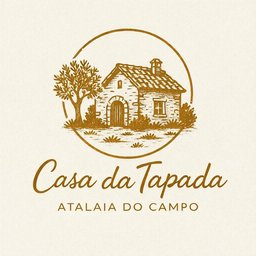
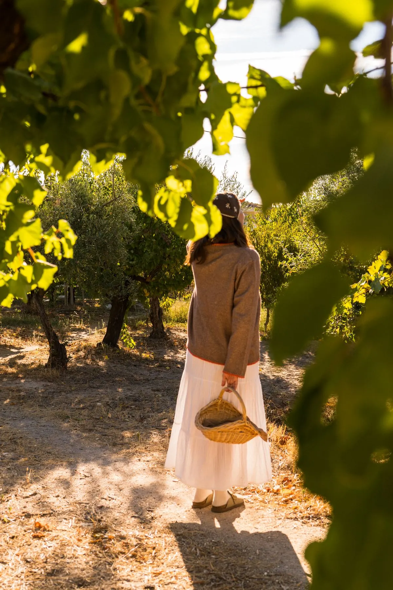
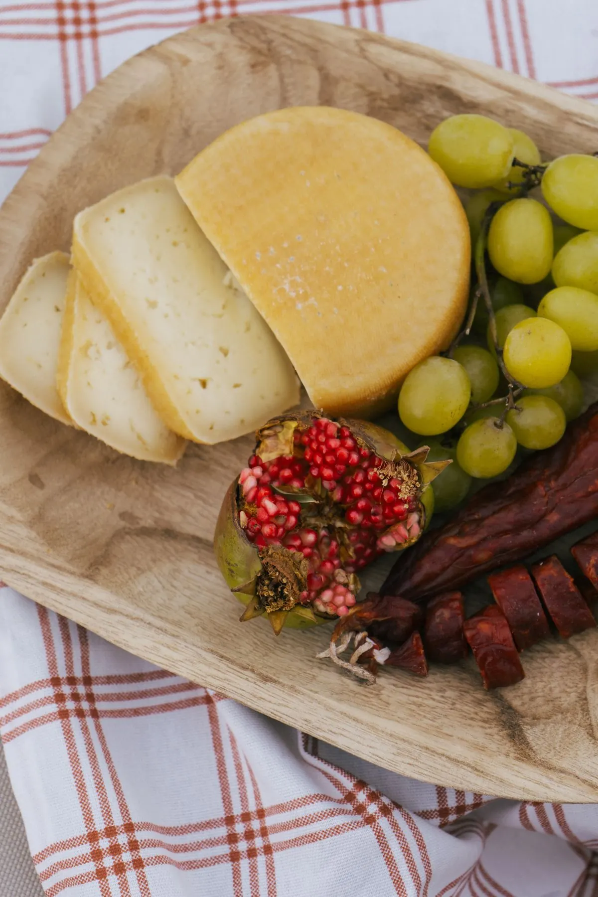

Aldeia Histórica de Portugal
Castelo Novo
Uma das mais bonitas Aldeias Históricas de Portugal, com ruas de pedra, castelo, património arquitetónico e paisagens sobre a Serra da Gardunha.
Ver no mapa

A região
Natureza, aldeias com história, sabores e tradições da Beira Baixa, a partir da Casa da Tapada.
Recomendamos
A Casa da Tapada fica numa localização privilegiada para descobrir alguns dos lugares mais emblemáticos da Beira Baixa.
Aldeia Histórica de Portugal
Uma das mais bonitas Aldeias Históricas de Portugal, com ruas de pedra, castelo, património arquitetónico e paisagens sobre a Serra da Gardunha.
Ver no mapaAldeia Histórica de Portugal
Uma das aldeias mais emblemáticas do país, famosa pelas enormes formações de granito e pelas casas construídas entre as rochas.
Ver no mapaNatureza
Perfeita para passeios na natureza, trilhos pedestres, miradouros e momentos de tranquilidade.
Ver no mapaNatureza
Paisagens de montanha, caminhadas e, no inverno, a neve. Um passeio imperdível para quem gosta de natureza.
Ver no mapaVila histórica
Uma vila histórica com ruas tradicionais, património arquitetónico e o ambiente característico da Beira Baixa.
Ver no mapaCidade
Gastronomia regional, comércio tradicional, produtos locais e eventos culturais.
Ver no mapaPara os dias quentes
Uma excelente opção para aproveitar a natureza e refrescar-se nos meses mais quentes.
Ver no mapa
Sabores
O Fundão é a terra da cereja. Na Tapada, na época certa, também há cerejas e pêssegos para colher diretamente da árvore.
Queijos, enchidos, presunto, azeite e pão caseiro fazem parte da mesa beirã. Alguns chegam até si no cesto de boas-vindas.
Passeios e experiências
A Alpreade Xplore organiza passeios turísticos pela nossa região, para conhecer paisagens, tradições e lugares especiais. Uma forma diferente de viver a sua estadia. Veja os passeios e atividades disponíveis no Instagram.
Ver no InstagramFestas e tradições
Uma boa oportunidade para conhecer as tradições locais e conviver com quem cá vive.
5 a 9 de agosto de 2027
Uma das principais festividades da Atalaia do Campo, com tradição, convívio e animação, feita por pessoas para pessoas.
Maio / junho
A feira da aldeia dedicada aos sabores da terra. As datas concretas são confirmadas todos os anos.
Junho
O mês da cereja do Fundão, com festas e mercados dedicados a este fruto em várias localidades do concelho.
Na aldeia
A Atalaia do Campo é uma aldeia pacata, com cafés e comércio local.
Há também restaurantes na aldeia e nas localidades vizinhas. Para supermercados, farmácias e outros serviços, o Fundão fica a poucos minutos.
A Casa da Tapada é o ponto de partida ideal.
Reservar